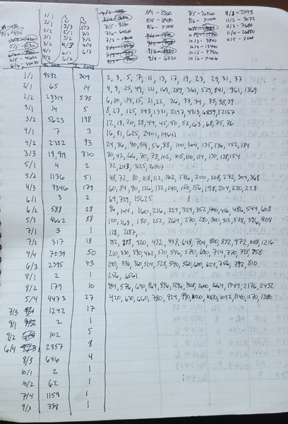

Counting
.
So, let's fast forward ahead 8 years. In that time, I (deep breath) went to Georgia Tech
to learn how to program, dropped out after a year and a half to move across the country
and enter the video game industry as a game programmer and designer, got to be friends with some truly
talented people, shipped a bunch of high profile games that ended up on store shelves around the country,
grew into a much, much stronger
C programmer and debugger, collected enough stock option money to survive off of for a few years if I was
pathologically frugal, got profoundly burned out in that way
the video game industry has a habit of doing, returned to college at the University of Wisconsin for
poetry writing, and, finding it a bad fit for me, eventually dropped out again in the summer of 2001,
and I was just adrift. I was living alone, off that stock option money, dabbling in some independent
game projects, starting to think about educational games, not really clear with what I was doing with myself.
The summer of 2002 is where my main story begins in earnest.
In very late June, I was hanging out with a friend of mine, Roxanne. She was, at the time, a grad student in neuroscience,
and we were hanging out at the co-op where she lived on the near, near East Side of Madison. And we were
talking about random things. As the conversation meandered, for reasons I don't recall,
Roxanne brought up the topic of prime numbers, and how peculiar and intriguing they were. It was, I think,
intended as a fairly innocent conversation topic - I don't think Roxanne imagined she was dangling a bottle
of wine in front of someone with a strong proclivity towards alcoholism. And the conversation didn't dwell there; we
moved on to whatever other random things science grad students and burned out game programmers living
off stock option money talk about.
But something about the conversation had lit a spark, had roused something dormant. It had
been a long, long time since I'd even thought about my experience tracking down the
divisor function, 8 years before, in 12th grade.
Once I got home, almost immediately, I grabbed one of my game development notebooks and picked up where I'd left
off with the divisor function. Despite the intervening years, the role prime factorization
had played for the divisor function still loomed large in my mind.
And so I immediately started trying out different ways of splitting up composite numbers
into smaller subgroups and then counting those groups.
The next couple weeks were an intense blur. Although I dabbled a bit with a few programming experiments,
mostly, I just had a pen, my trusty TI-85 calculator, and a notebook, soon to be followed by a second.
And I counted. I enumerated. I listed. And I scoured for patterns.
Trekking in to the University of Wisconsin campus every day, I spent countless hours
in the comforting gloom of the student union's Rathskeller,
scribbling away in my notebooks with tables of my experiments. I paced absent-mindedly
down the wooded lake shore path along Lake Mendota, from the Terrace out around University Bay,
my head racing with hunches about what I was seeing, and questions gelling as I strolled
for me to try once my walk was through.
Madison in the winter is brutal, but its summers can be glorious - and that summer was
glorious. I spent yet more time, out behind the Student Union on the Terrance, working
through more experiments on my notebooks next to the lake, surrounded by happy throngs of Madisonians as I
tried to make out the calculations on my dim TI-85 screen in the brilliant midsummer sun.
And I mixed this all up with setting up shop in the coffee shop of a Barnes and Nobles on the
West side of town that I was fond of, too, just around the corner from the game company
that had brought me to Madison in the first place.
I'm not positive about the dates, but I'm almost certain this entire episode ran from the
beginning of July for just a few weeks.
{kind=link}
So let me talk in a little more detail about what I was looking at. I have
separate pages for annotating my notes in more fine-grained detail, but
here I want to cover the broader arc.
I started, simply enough, by just listing numbers and counting their factors.
So this is the very first thing I wrote down.

{kind=link}
My notes from 8 years before, when I was tracking down the divisor function, looked much like this.
With the benefit of hindsight, this table consists
of a catalogue of the values of the two prime omega functions, $\omega(n)$ and $\Omega(n)$,
found at A001221 and
A001222.
Starting from here, I wrote a short C program to tally up how many of each category
there were for $n = 100,000$, for $n=2048$, and for $n=1,000,000$.

{kind=link}
{kind=link}
So this was my initial attempt at sorting composite numbers into countable sets.
I explored this a little more, on pages 5 and 11 of this first notebook,
Page 5
{kind=link}
Page 11 (Top Half)
{kind=link}
but I ran out of steam for this approach pretty quickly - these weren't proving easy
categories of composities to count, and no obvious patterns leapt out to me.
I briefly flirted with an idea that would lead in the direction of
Legendre's Formula,

(the stuff in the upper right and bottom of this page were written later), but
I was immediately turned off by needing primes to count - that bothered me,
aesthetically. For reasons I can't articulate, I intensely wanted to expess the
primes as a consequence of the composites, rather than the other way around.